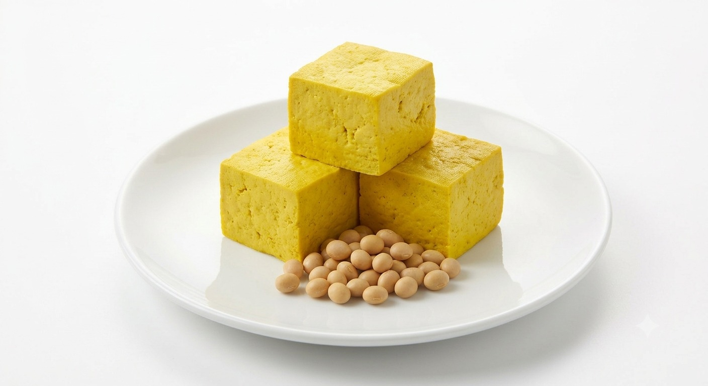
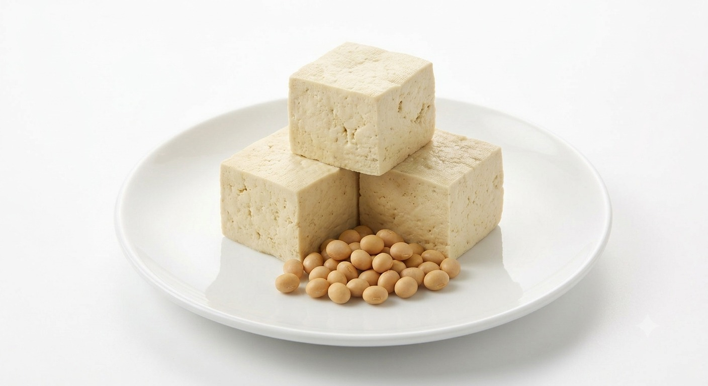

Higienis & Tersertifikasi
Sehat tanpa bahan pengawet dan memiliki sertifikat Depkes, Halal MUI, dan uji laboratorium akademisi.
Produsen Tahu Sehat dengan Kualitas Premium dan Bersertifikat Halal, serta Terbukti Dipercaya 5 SPPG dan 15 Rumah Sakit di Jawa Tengah
Tahu Sehat Sari merupakan UMKM yang bergerak di bidang produksi tahu berkualitas dan telah berdiri sejak tahun 2009. Usaha ini didirikan oleh Bapak Suryo Sembodo, dengan nama "Sari" yang diambil dari nama istri beliau sebagai bentuk penghormatan dan kebersamaan dalam membangun usaha keluarga.
Selengkapnya ›
Sehat tanpa bahan pengawet dan memiliki sertifikat Depkes, Halal MUI, dan uji laboratorium akademisi.

Tahu memiliki tekstur lembut yang khas dan dibuat menggunakan sumber mata air langsung yang kaya mineral.
Diproduksi langsung oleh koki dan pengrajin tahu berpengalaman dan melalui proses pelatihan yang ketat sebelum bekerja.
Menggunakan plastik standar food grade dan proses pengemasan wajib menggunakan masker dan sarung tangan steril.